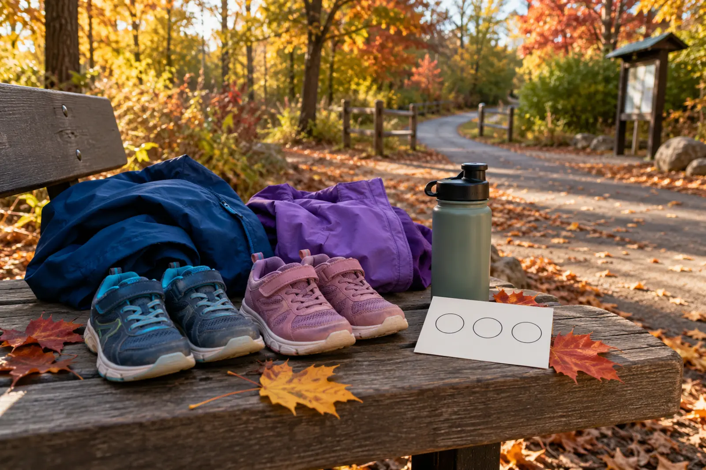

Route
One familiar loop or out-and-back, with no improvised shortcut and as few driveway or street conflicts as practical.
AFTER SCHOOL · 30 MINUTES · NO-SPEND
You do not need a trailhead, a perfect forecast or a heroic mood. You need one familiar loop, three things to notice and a turnaround that protects dinner, homework and daylight.

A hike asks the family to prepare for a destination. This plan asks the family to use the safe route already available: a neighborhood sidewalk, a school track when public use is allowed, a short park loop or an out-and-back path whose crossings and surface are already understood. No mileage target. No new trail. No drive unless the nearby route is unsafe.
The CDC says children and adolescents ages 6 through 17 should get 60 minutes or more of moderate-to-vigorous physical activity each day. A calm 30-minute observation walk may contribute to that total, but pace, intensity and the rest of the day matter. Do not sell children a fake equation. The value here is a repeatable start that can coexist with recess, sports, active play and ordinary movement.
Use three broad clues that do not require touching, collecting or identifying a species correctly:
Children can point, describe or photograph the clue if the adult permits it. Nothing needs to come home. The clues turn a familiar block into a finite job without turning the adult into an unpaid naturalist who must identify everything.
Check the National Weather Service forecast, visible conditions and daylight. Choose the route aloud. Each child gets water only if the conditions or their needs justify carrying it; for a short neighborhood loop, the simplest kit often wins. Use the family weather-cutoff plan when the answer is not obvious.
Let the school day drain off before asking questions. Adults control street crossings and parking-lot edges. NHTSA advises pedestrians to use sidewalks when available, cross at marked crosswalks or intersections when possible and stay alert. A reflective strip or light can improve visibility, but it does not make a bad crossing safe.
Stop where the whole family can stand without blocking a path or entering traffic. One clue per child is enough. If siblings race, switch from “first to find” to “everyone must agree the clue fits.” If an animal appears, use the stop, group up and back away plan.
Do not add the extra block because everyone suddenly feels good. The repeatable win is arriving home on time. On an out-and-back route, the turnaround happens no later than minute 15; in poor conditions, it happens earlier.
Shoes go in their regular place. Wet layers get hung. Each child names the clue worth remembering. No worksheet is required. If a photo was taken, choose one and delete the rest instead of building another digital chore.
Neighborhood block: best when sidewalks, crossings and lighting are predictable. School track: useful only when public access is permitted and school activities are not displaced. Small park loop: good when parking, surfaces and closing time are known. Driveway or yard circuit: the correct choice when streets are unsafe or a child needs immediate access to home.
For a longer planned outing, use the first-hike guide. For a mapped nature-center visit, use the Baltimore Woods one-loop plan. Do not stretch this school-night system until it duplicates either one.
Ten-minute version: walk five minutes out and five back; find one change only. Porch or window version: compare three sounds or shadows without leaving home. Indoor building version: walk a safe hall or room circuit and find three material textures without touching restricted surfaces. Dark already: do not force the nature label—use the indoor version and save the route for daylight.
Thunder means go inside. Ice, poor visibility, unsafe air or an adult who cannot supervise the route also ends the outdoor plan. A missed walk is not a family failure; it is evidence that the system needs a different time window.
Skip the outdoor route when safe pedestrian space is unavailable, the supervising adult cannot stay fully attentive, a child has symptoms or mobility needs the route cannot accommodate, or daylight and weather fail the card. Families managing a medical condition should follow individualized clinician guidance rather than this general activity plan.
MAKE THE DAY COUNT
Build the plan your family can finish well, then leave enough energy for the next part of the day.
More family plans